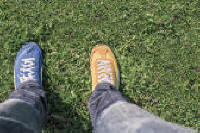

Joining ideas: conjunctions

Words which join ideas together are called conjunctions. In
English, conjunctions connect ideas. For
example:
I went home and cooked dinner
I took a coat because it was cold
I looked for him but didn't find
him
I don't have the money so I can't
buy it
Examples in red on this page are wrong!
 |
3 types of conjunction |
 |
Joining equal ideas |

These are called coordinating conjunctions. The ideas they
join together can be in a different sentences and you still
understand the meaning. The most important ones are but,
so, and and or. For example:
It was raining. I didn't take a coat → It was raining
but I didn't take a coat
It was raining. I took a coat → It was raining
so I took a coat
It was raining. The wind was strong → It was raining
and the wind was strong
It was raining or (it was) snowing all day
These conjunctions can only come between the
ideas. You cannot say:
But I didn't take a coat, it was raining.
That's WRONG.
 |
Joining unequal ideas |

These are subordinating conjunctions. You cannot understand
one of the ideas without the other. The most important ones
are because, if, although, before, after, when. For
example:
I took a coat because it was
raining
Take a coat if it is raining
I didn't take a coat although it
was raining
It started to rain before I put on
my coat
I put on my coat after it started
to rain
I put on my coat when it started to
rain
You can move these conjunctions to the beginning but you must use
a comma, like this:
Because it was raining, I took
a coat
If it is raining, take a coat
Although it was raining, I didn't
take a coat
Before I put on my coat, it started
to rain
After it started to rain, I put on
my coat
When it started to rain, I put on
my coat
 |
Double conjunctions |

These conjunctions always come together and join two ideas or two
nouns. The most important ones are whether ... or, not
only ... but (also), as ... as, both ... and (also), either ... or.
For example:
Whether it rains
or it is sunny is not important
Not only did it rain
but the wind was very strong
The weather is as bad today
as it was yesterday
Both the rain
and also the strong wind made me
uncomfortable
Either it will rain or the sun will
shine
|
|
With not only ... but also
the grammar changes.
You must make a question form after Not only. |
 |
The meaning of conjunctions |
Conjunctions do three main things:
- Add things together
-

and, plus, not only ... but also, both ... and do this. For example:
I came on time and John was late
Not only was the weather cold but it was also raining
Both Mary and I want to come to the party and meet your friends - Give reasons
-

so and because do this. For example:
I will come early so I can help
Because it is raining, I'm not going out - Make an opposite idea
-

but and although do this. For example:
I was sure it was her but it wasn't!
Although she was unhappy, she smiled - Give different ideas
-

either ... or and whether ... or do this. For example:
Either he will arrive on time or he will be very late
Whether he comes or not is important